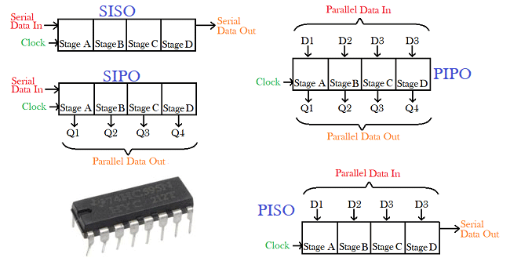

Register:
Shift register:
They are used basically for the storage and transfer of digital data. A register may output data either in serial form or in parallel form. Serial output means that the data is transferred out of the register, one bit at a time serially. Parallel output means that the entire data stored in the register is available in parallel form, and can be transferred out at the same time.
Following are the four types of shift registers based on applying inputs and accessing of outputs.
1.)Serial In - Serial Out shift register
2.)Serial In - Parallel Out shift register
3.)Parallel In - Serial Out shift register
4.)Parallel In - Parallel Out shift register

These are the Types of Shift Regisers
SIPO-Shift Registers:
which input data will be provided serially through one input pin and data
retrieval processes occur in parallel mode.